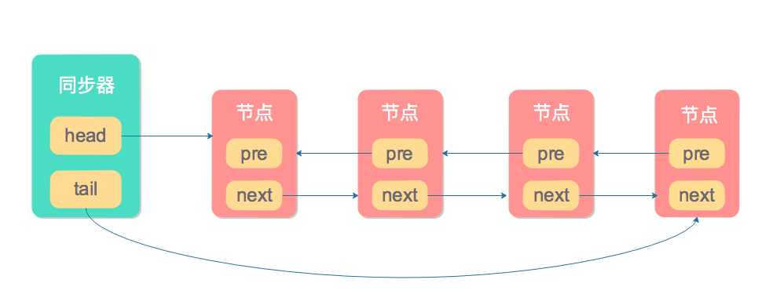
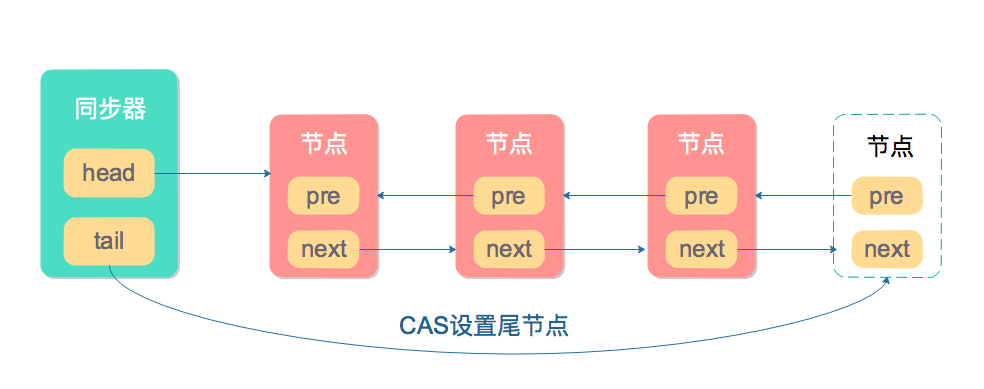
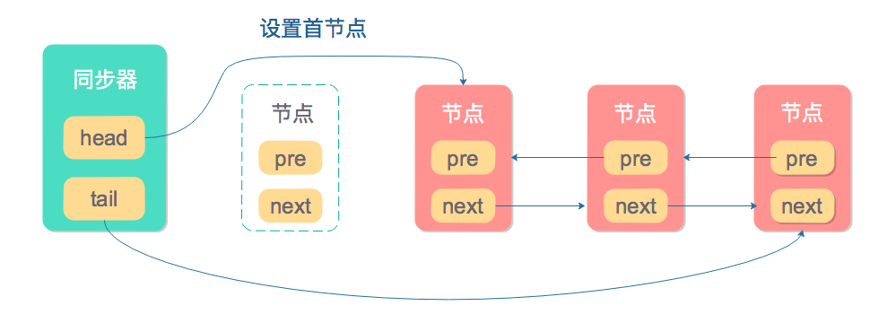
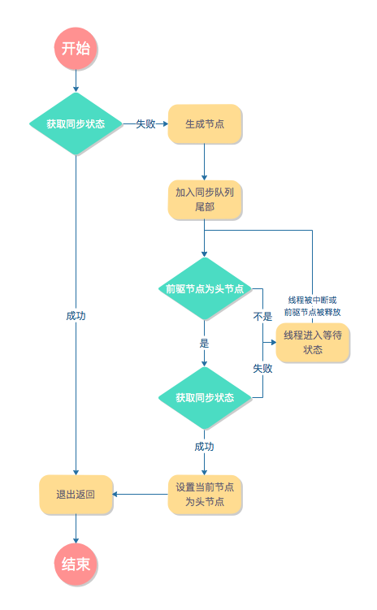

详解AQS
AQS，AbstractQueuedSynchronizer，即队列同步器。它是构建锁或者其他同步组件（如ReentrantLock、ReentrantReadWriteLock、Semaphore等）的基础框架，J.U.C并发包的作者（Doug Lea）期望它能够成为实现大部分同步需求的基础。它是J.U.C并发包中的核心基础组件。
简介
AQS的设计是基于模板方法模式的，它实现了一些通用逻辑，子类通过继承并重写指定的方法来实现完整逻辑。
AQS修改状态的方法
AQS使用一个int类型的成员变量state来表示同步状态，子类重写AQS指定方法时，如果需要对同步状态进行操作，应当使用AQS提供的如下3个方法：
| 方法名称 | 描述 |
|---|---|
| int getState() | 获取当前同步状态 |
| void setState(int newState) | 设置同步状态 |
| boolean compareAndSetState(int expect, int update) | 使用CAS设置同步状态，能保证原子性 |
AQS可重写的方法
AQS共有如下5个可重写的方法，子类可以根据需要重写其中的部分或全部方法。
| 方法名称 | 描述 |
|---|---|
| boolean tryAcquire(int arg) | 独占式获取同步状态，实现该方法需查询当前状态并判断当前状态是否符合预期，然后使用CAS设置同步状态 |
| boolean tryRelease(int arg) | 独占式释放同步状态，等待获取同步状态的其他线程有机会获取同步状态 |
| int tryAcquireShared(int arg) | 共享式获取同步状态，返回值大于0表示成功，反之表示失败 |
| boolean tryReleaseShared(int arg) | 共享式释放同步状态 |
| boolean isHeldExclusively() | 当前同步器是否在独占式模式下被线程占用，一般该方法表示是否被当前线程所独占 |
AQS提供的模板方法
下面是AQS提供的一部分比较重要的模板方法，实现自定义同步组件时，我们会调用这些模板方法。
| 方法名称 | 描述 |
|---|---|
| void acquire(int arg) | 独占式获取同步状态，如果当前线程获取同步状态成功，则由该方法返回，否则，将会进入同步队列等待，该方法将会调用可重写的tryAcquire(int arg)方法 |
| void acquireInterruptibly(int arg) | 与acquire(int arg)相同，但是该方法响应中断，当前线程为获取到同步状态而进入到同步队列中，如果当前线程被中断，则该方法会抛出InterruptedException异常并返回 |
| boolean tryAcquireNanos(int arg,long nanos) | 在acquireInterruptibly(int arg)的基础上增加超时限制，如果当前线程在nanos时间内没有获取到同步状态，那么将会返回false，已经获取则返回true |
| void acquireShared(int arg) | 共享式获取同步状态，如果当前线程未获取到同步状态，将会进入同步队列等待，与独占式的主要区别是在同一时刻可以有多个线程获取到同步状态 |
| void acquireSharedInterruptibly(int arg) | 共享式获取同步状态，响应中断 |
| boolean tryAcquireSharedNanos(int arg, long nanosTimeout) | 在acquireSharedInterruptibly(int arg)的基础上增加超时限制 |
| boolean release(int arg) | 独占式释放同步状态，该方法会在释放同步状态之后，将同步队列中第一个节点包含的线程唤醒 |
| boolean releaseShared(int arg) | 共享式释放同步状态 |
同步队列
AQS通过内置的同步队列（一个FIFO双向队列）来完成获取资源线程的排队工作，如果当前线程获取同步状态失败时，AQS则会将当前线程以及等待状态等信息构造成一个节点（Node）并将其加入同步队列，同时会阻塞当前线程，当同步状态释放时，则会把节点中的线程唤醒，使其再次尝试获取同步状态。
Node
同步队列中的节点用来保存获取同步状态失败的线程引用、等待状态、前驱节点和后驱节点，节点的属性如下表所示
| 属性 | 描述 |
|---|---|
| int waitStatus | 等待状态，包含如下状态 - CANCELLED 值为1，因为超时或者中断，节点会被设置为取消状态，被取消的节点时不会参与到竞争中的，他会一直保持取消状态不会转变为其他状态。 - SIGNAL 值为-1，后继节点的线程处于等待状态，而当前节点的线程如果释放了同步状态或者被取消，将会通知后继节点，使后继节点的线程得以运行。 - CONDITION 值为-2，节点在等待队列中，节点线程等待在Condition上，当其他线程对Condition调用了signal()后，改节点将会从等待队列中转移到同步队列中。 - PROPAGATE 值为-3，表示下一次共享式同步状态获取将会无条件地传播下去。 - INITIAL 值为0，初始状态。 |
| Node prev | 前驱节点 |
| Node next | 后继节点 |
| Node nextWaiter | 等待队列的后继节点，如果这个节点是共享的，那么这个字段将是一个SHARED常量，也就是说节点类型和等待队列的后继节点用的是同一个字段 |
| Thread thread | 获取同步状态的线程 |
节点是构成同步队列的基础，同步器拥有首节点（head）和尾节点（tail），没有成功获取同步状态的线程将成为节点加入同步队列的尾部，同步队列的基本结构如下图所示：

入列
入列的过程必须是线程安全的，因此同步器提供了一个基于CAS的设置尾节点的方法compareAndSetTail(Node expect, Node update)，只有这个方法执行成功，当前节点才能与之前的尾节点建立关联。

出列
同步队列遵循FIFO，首节点是获取同步状态成功的节点，当首节点释放同步状态时会唤醒后继节点，后继节点在获取同步状态成功后会把自己设为首节点，因为只有一个线程能够获取同步状态成功，所以设置首节点不需要通过CAS来保证。

同步状态的获取和释放
独占式
独占式获取
独占式同步状态的获取是通过void acquire(int arg)方法来获取的，该方法对中断不敏感，也就是说当线程获取同步状态失败进入同步队列后，后续对线程进行中断操作时，线程不会从同步队列中移出，该方法代码如下所示：
public final void acquire(int arg) {
if (!tryAcquire(arg) &&
acquireQueued(addWaiter(Node.EXCLUSIVE), arg))
selfInterrupt();
}
它先尝试获取同步状态，如果失败则构造一个独占式的节点并加入同步队列的尾部，最后通过调用acquireQueued(final Node node, int arg)方法通过死循环的方式获取同步状态，如果获取不到则阻塞线程，而前驱节点出队或者中断则会唤醒阻塞线程。
final boolean acquireQueued(final Node node, int arg) {
boolean failed = true;
try {
// 中断标志
boolean interrupted = false;
for (;;) {
final Node p = node.predecessor();
// 如果前驱节点是头节点则获取同步状态
if (p == head && tryAcquire(arg)) {
setHead(node);
p.next = null; // help GC
failed = false;
return interrupted;
}
if (shouldParkAfterFailedAcquire(p, node) &&
parkAndCheckInterrupt())
interrupted = true;
}
} finally {
if (failed)
cancelAcquire(node);
}
}
整个独占式获取同步状态的流程图如下所示：

独占式获取响应中断
独占式获取并不响应中断而只是把自己置为中断状态，AQS提供了一个响应中断的方法acquireInterruptibly(int arg)，这个方法在发现线程被中断后，会立即响应中断抛出异常InterruptedException，并取消继续获取同步状态。
public final void acquireInterruptibly(int arg)
throws InterruptedException {
if (Thread.interrupted())
throw new InterruptedException();
if (!tryAcquire(arg))
doAcquireInterruptibly(arg);
}
独占式超时获取
tryAcquireNanos(int arg, long nanosTimeout)是对acquireInterruptibly(int arg)的进一步增强，因为它除了响应中断以外，还可以设置超时时间，在超时时间内获取到同步状态则返回true，否则返回false。
public final boolean tryAcquireNanos(int arg, long nanosTimeout)
throws InterruptedException {
if (Thread.interrupted())
throw new InterruptedException();
return tryAcquire(arg) ||
doAcquireNanos(arg, nanosTimeout);
}
独占式同步状态释放
独占式释放同步状态是通过release(int arg)方法来实现的，该方法先调用tryRelease(int arg)方法来释放同步状态，释放成功后，会调用unparkSuccessor(Node node)方法唤醒后继节点。其代码如下所示：
public final boolean release(int arg) {
// 释放同步状态
if (tryRelease(arg)) {
Node h = head;
if (h != null && h.waitStatus != 0)
// 唤醒后继节点
unparkSuccessor(h);
return true;
}
return false;
}
共享式
共享式与独占式的最主要区别在于同一时刻独占式只能有一个线程获取同步状态，而共享式在同一时刻可以有多个线程获取同步状态。例如读操作可以有多个线程同时进行，而写操作同一时刻只能有一个线程进行写操作，其他操作都会被阻塞。
共享式获取
AQS提供acquireShared(int arg)方法共享式获取同步状态，和独占式获取一样这个方法对不响应中断。
public final void acquireShared(int arg) {
if (tryAcquireShared(arg) < 0)
doAcquireShared(arg);
}
改方法首先尝试通过tryAcquireShared(arg)获取同步状态，返回值小于0表示失败，则通过doAcquireShared(arg)方法自旋获取同步状态。
private void doAcquireShared(int arg) {
// 构造共享节点并加入同步队列
final Node node = addWaiter(Node.SHARED);
boolean failed = true;
try {
boolean interrupted = false;
// 自旋尝试获取同步状态
for (;;) {
final Node p = node.predecessor();
// 前驱节点为头节点
if (p == head) {
// 获取同步状态
int r = tryAcquireShared(arg);
// 获取成功，设置当前节点为头节点
if (r >= 0) {
setHeadAndPropagate(node, r);
p.next = null; // help GC
if (interrupted)
selfInterrupt();
failed = false;
return;
}
}
// 进入等待状态
if (shouldParkAfterFailedAcquire(p, node) &&
parkAndCheckInterrupt())
interrupted = true;
}
} finally {
if (failed)
cancelAcquire(node);
}
}
通过观察上述代码我们可以发现，它与独占式获取同步状态的逻辑十分相似，只不过独占式获取是通过tryAcquire(arg)返回true或false来判断是否成功，而共享式获取是通过tryAcquireShared(arg)是否大于等于0来判断是否成功。
共享式获取响应中断
与独占式获取响应中断一样，AQS也提供了共享式获取响应中断的方法acquireSharedInterruptibly(int arg)，同样这个方法在发现线程被中断后，会立即响应中断抛出异常InterruptedException，并取消继续获取同步状态。
public final void acquireSharedInterruptibly(int arg)
throws InterruptedException {
if (Thread.interrupted())
throw new InterruptedException();
if (tryAcquireShared(arg) < 0)
doAcquireSharedInterruptibly(arg);
}
共享式超时获取
与独占式超时获取相对应，共享式超时获取除了响应中断以外，还可以设置超时时间，在超时时间内获取到同步状态则返回true，否则返回false。
public final boolean tryAcquireSharedNanos(int arg, long nanosTimeout)
throws InterruptedException {
if (Thread.interrupted())
throw new InterruptedException();
return tryAcquireShared(arg) >= 0 ||
doAcquireSharedNanos(arg, nanosTimeout);
}
共享式同步状态释放
共享式释放同步状态是通过releaseShared(int arg)方法来实现的，因为可能会存在多个线程同时进行释放同步状态资源，所以需要确保同步状态安全地成功释放，一般都是通过CAS和循环来完成的。其代码如下所示：
public final boolean releaseShared(int arg) {
// 释放同步状态
if (tryReleaseShared(arg)) {
// 自旋释放同步状态
doReleaseShared();
return true;
}
return false;
}
本作品采用知识共享署名 4.0 国际许可协议进行许可，转载请注明原文链接
本文链接：https://schhx.github.io/2018/07/22/详解AQS/